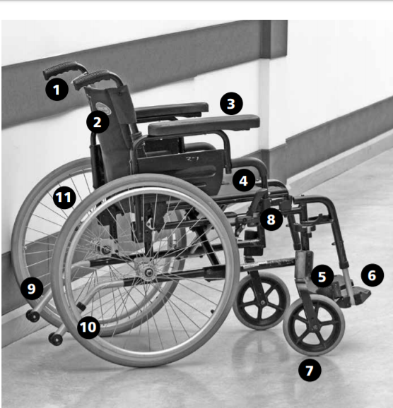
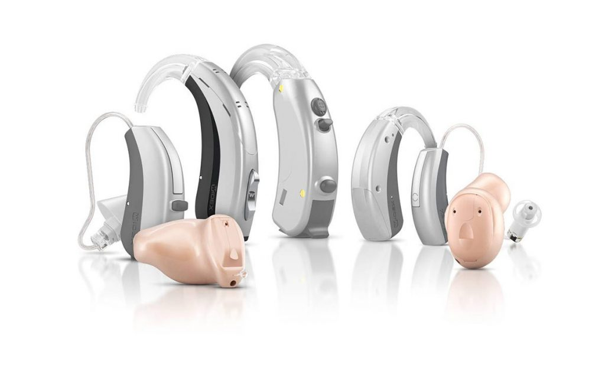
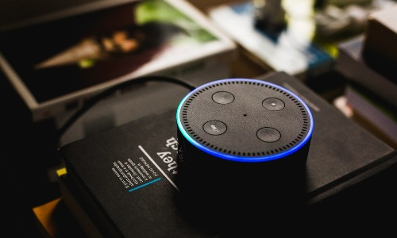

Essential Devices
Mobility aids

There are various walking aids which can help people with impaired ability to walk and wheelchairs or mobility scooters for more severe disability or longer journeys which would otherwise be undertaken on foot. For people who are blind or visually impaired the white cane and guide dog have a long history of use.
see more >>Hearind aids devices

Place a battery in the correct compartment, insert the ear-dome piece into the ear canal, and place the hearing aid behind your ear. Try inserting and removing your hearing aids several times to ensure you are comfortable with their fit
see more >>Cognitive Aids

The goal of our Cognitive Aids in Medicine research group is to explore how to best design and measure the impact of the use of cognitive aids in medicine. We are focusing our initial efforts on high-stakes medical interventions that we believe would most likely benefit from aiding cognition: critical events in medicine.
see more >>Computer software and hardware

Computer software and hardware have done so much for those with disabilities. There are numerous technological devices and programs readily available to help with those with physical, intellectual, speech, hearing, and vision impairments. These include voice recognition programs, screen readers, and screen enlargement applications to help people with mobility and sensory impairments use computers and mobile devices. Closed captioning technology also allows people with hearing problems to watch movies, television programs, and other digital media.
see more >>Tools
Practical tools which can help people with disabilities complete everyday tasks include devices which help with reading and learning, such as automatic page turners, book holders, and adapted pencil grips; adaptive switches and utensils to allow those with limited motor skills to eat, play games, and participate in other activities; devices and features that help with performing tasks such as cooking, dressing, and grooming; and specialized handles and grips.
- Liftware
- Lucy 4 Keyboard
- iRobot Home Robots
- Good Grips Button Hook
- Vive Health Foam Tube Grips
- One-Handed Can Openers